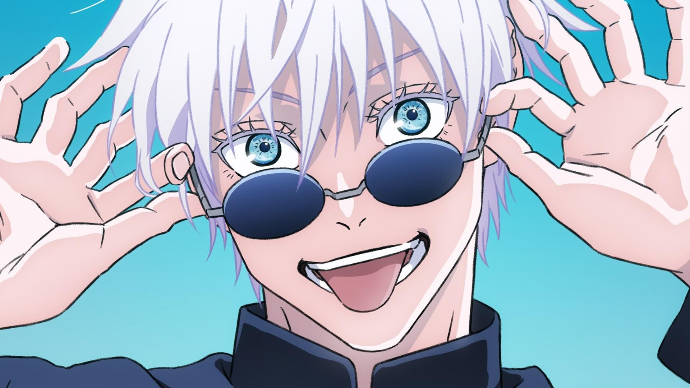

¿Que es el anime?
El anime también escrito ánime y animé en español,es un estilo de animación tradicional o por computadora de origen japonés.
El anime es un medio de gran expansión en Japón, siendo al tiempo un producto de entretenimiento comercial y cultural, lo que ha
ocasionado un fenómeno cultural de masas y una forma de arte tecnológico. Está potencialmente dirigido a todos los públicos, desde niños,
adolescentes y adultos; hasta especializaciones de clasificación esencialmente tomada de la existente para el manga, con clases base diseñadas para
especificaciones sociodemográficos tales como empleados, amas de casa, estudiantes, etc. Suelen tratar sobre sujetos, temas y géneros tan diversos como el amor,
aventura, ciencia ficción, cuentos infantiles, literatura, deportes, horror, fantasía, comedia y muchos otros.
